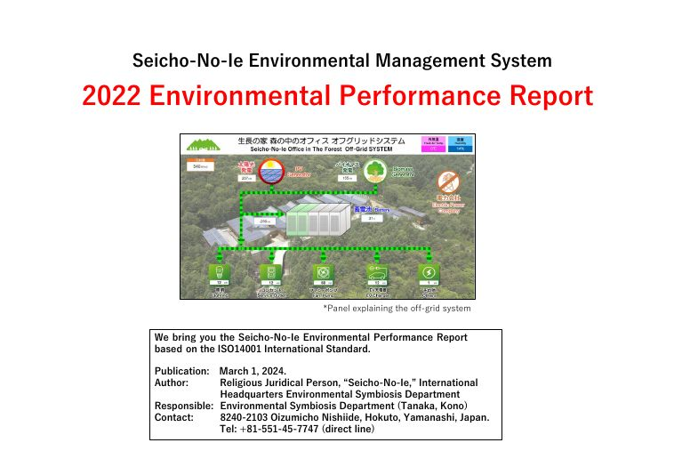
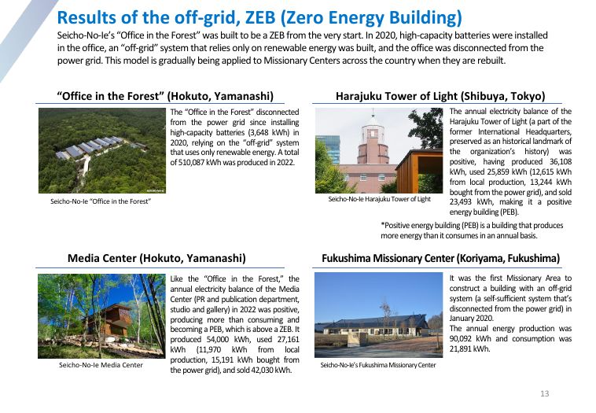

Notre rapport de performance environnementale 2022
Nous vous présentons le rapport de performance environnementale de Seicho-No-Ie, établi selon la norme internationale ISO 14001, pour l'année 2022 (janvier à décembre).

| Publication | 1er mars 2024 |
|---|---|
| Auteur | Personne juridique religieuse « Seicho-No-Ie », Siège international, Département de la symbiose environnementale |
| Responsables | Département de la symbiose environnementale (Tanaka, Kono) |
| Contact | 8240-2103 Oizumicho Nishiide, Hokuto, Yamanashi, Japon Tél. : +81 551-45-7747 (ligne directe) |
1. Actions de sensibilisation au sein de l'organisation religieuse
Fondé sur la vérité religieuse selon laquelle « Dieu, la nature et l'être humain ne font qu'un », et dans le but d'amener chacun à adopter un mode de vie durable en harmonie avec la nature, Seicho-No-Ie promeut une manière de vivre qui contribue à résoudre les problèmes environnementaux mondiaux.
Message vidéo du Nouvel An
Le 1er janvier 2022, le message vidéo du Nouvel An du Rév. Masanobu Taniguchi, président de Seicho-No-Ie, a été publié sur le site officiel. Alors que la pandémie de coronavirus entrait dans sa troisième année, il y a rappelé l'importance du « mode de vie du cadran solaire » (ne retenir que les moments lumineux) en ces temps incertains. Il a expliqué que le rôle de Seicho-No-Ie est de tirer les leçons de ces catastrophes et de ces échecs, d'éveiller la volonté de Dieu et de Bouddha qui demeure en nous, et d'agir avec joie pour bâtir une « nouvelle civilisation » visant la Grande Harmonie de Dieu, de la nature et de l'être humain. La vidéo a été sous-titrée en anglais, portugais, chinois, coréen, espagnol et allemand.
Liens vers les vidéos SNI
Une page web regroupe les vidéos du Rév. Masanobu Taniguchi, de Mme Junko Taniguchi (présidente de l'Association de la Colombe blanche de Seicho-No-Ie) et de conférenciers de Seicho-No-Ie, dont des ministres ordonnés. Cette initiative est née de la nécessité de freiner la propagation du coronavirus, qui rendait difficile la tenue en présentiel des conférences publiques, séminaires de formation spirituelle, réunions de lecteurs et autres événements. Les vidéos ont été largement utilisées pour l'étude personnelle, lors de forums en ligne et d'activités de sensibilisation à la protection de l'environnement, et comme guide et source de motivation pour une vie plus lumineuse.
Livres et revues mensuelles
Seicho-No-Ie encourage le passage à un mode de vie de « nouvelle civilisation », où la nature et l'être humain prospèrent ensemble, à travers la publication et la diffusion d'ouvrages tels que Bâtissons une « nouvelle civilisation » (vol. 1, « Les bases du mouvement », et vol. 2, « Le développement concret du mouvement »), sous la direction du Rév. Masanobu Taniguchi, ou La vie quotidienne dans la forêt de Mme Junko Taniguchi.
Des articles sur la protection de l'environnement ont paru dans chaque numéro de la revue des membres (Bulletin Seicho-No-Ie) et des revues destinées au grand public : Inochi-No-Wa (« Le cercle de la vie », revue générale), Shirohato (« Colombe blanche », revue féminine) et Hidokei 24 (« Cadran solaire 24 », revue pour les jeunes).
Activités par projets (PBS)
Pour accompagner le passage de l'« ancienne civilisation », où l'être humain détruit la nature et provoque le réchauffement climatique pour satisfaire ses désirs, à une « nouvelle civilisation », où la prospérité de la nature est celle de l'être humain, Seicho-No-Ie fait vivre ses valeurs et un mode de vie bas carbone au quotidien grâce à son système par projets (PBS), organisé en trois clubs. Il organise de petits événements et diffuse le mouvement en ligne, notamment sur Facebook.
Club de potager biologique
Il met en pratique et promeut une « alimentation sans viande et bas carbone ». Ses membres cultivent leurs propres légumes et céréales biologiques sur leur balcon ou au potager, pour savourer et partager avec leur entourage les bienfaits locaux et de saison de la nature. Le club recommande aussi d'acheter des produits biologiques, sans pesticides, locaux et de saison.
Livre : Changer l'avenir depuis la table
Club vélo
Il promeut un « mode de vie sobre en ressources et bas carbone ». Le vélo n'utilise pas de carburant fossile et n'émet pas de CO₂ : l'utiliser au quotidien réduit nettement nos émissions. Enfants et adultes du monde entier partagent la joie d'apprendre à pédaler et de rouler dans le vent. Le club œuvre pour la paix en faisant connaître la vie saine et spirituellement riche qu'offre le vélo.
Livre : La paix à vélo
Club d'artisanat
Il promeut une « expression bas carbone centrée sur la nature ». Ses membres fabriquent à la main des objets du quotidien : baguettes, cadres photo, étuis à livres, pochettes… Ils choisissent des matériaux respectueux de la nature, comme le bois local et les fibres naturelles. Plutôt que la surproduction et la surconsommation d'objets bon marché, le club prône un mode de vie qui prend soin des choses qui nous entourent.
Livre : L'artisanat sauvera le monde
Activités en ligne et engagement à la maison
Seicho-No-Ie a mené des actions de sensibilisation sur Internet. Son site officiel met en avant les activités des clubs PBS ; des forums en ligne (Facebook, Zoom…) ont permis de visionner ensemble les vidéos du Rév. Masanobu Taniguchi, de Mme Junko Taniguchi et des conférenciers, puis d'échanger impressions et opinions.
Les membres, en tant que pratiquants d'un mode de vie éthique fondé sur la foi, ont été invités à utiliser le Journal du cadran solaire (édition 2022), pour noter chaque jour leurs gestes « écologiques », et le Seikatsu no kirokuhyo, un tableau mensuel de leurs émissions de CO₂. Imprimé à 36 000 exemplaires par le Siège international pour les membres, ce tableau permet de relever la consommation et les émissions liées à l'électricité, au gaz, à l'eau, au kérosène et à l'essence, et de déduire les émissions évitées grâce à l'électricité solaire revendue. Objectif : réduire ses émissions par rapport à l'année précédente. Distribué depuis 2001, il aide les familles à diminuer leur empreinte carbone.
Depuis la libéralisation du marché de l'électricité au Japon en avril 2016, Seicho-No-Ie recommande aussi de choisir des fournisseurs proposant une part plus élevée d'énergies renouvelables, plutôt qu'une électricité d'origine nucléaire ou thermique.
2. Actions de sensibilisation hors de l'organisation
Protection des forêts et lutte contre la faim
Dans un esprit de lutte contre la faim, la cantine du personnel du « Bureau dans la forêt » ne sert, une fois par mois, qu'un bol de soupe et un bol de riz, et l'économie réalisée est reversée au Programme alimentaire mondial des Nations unies (PAM). Pour contribuer, même modestement, à freiner la déforestation, Seicho-No-Ie fait aussi des dons au WWF Japon.
| Don au WWF pour la protection des forêts | Dons au « Projet de conservation des forêts d'Indonésie » du WWF Japon : collecte pour la préservation de la biodiversité, part des ventes des livres du Rév. Masanobu Taniguchi (dont ceux coécrits avec Mme Junko Taniguchi) et 200 000 yens par mois issus des « dons pour les forêts » des trois revues mensuelles (1 yen par revue). Total 2022 : 1 291 851 yens. Ces fonds financent patrouilles, reboisement, études et éducation à l'environnement autour de deux parcs nationaux de Sumatra et dans trois États de Bornéo. |
|---|---|
| Un bol de soupe, un bol de riz | Depuis avril 2014, une fois par mois, la cantine du personnel sert ce repas frugal en solidarité avec les personnes qui souffrent de la faim, et reverse 300 yens par repas servi. Ce mouvement s'est étendu à tous les sites de Seicho-No-Ie dans le monde. Total 2022 : 177 000 yens (590 repas), versés au siège du PAM à Rome via l'Association japonaise pour le PAM. |
| Collecte « en un clic » contre la faim | L'Association de prospérité de Seicho-No-Ie, qui réunit des chefs d'entreprise adhérant à ses enseignements, reverse chaque mois au PAM des dons d'entreprises partenaires, proportionnels au nombre de clics reçus sur son site. Total 2022 : 948 708 yens, de 14 partenaires. |
Agir pour la paix : « Peace for Ukraine » (P4U)
Environnement, ressources et paix sont étroitement liés. Après avoir obtenu la certification ISO 14001 pour agir sur l'environnement et les ressources, Seicho-No-Ie a ressenti le besoin d'agir aussi pour la paix. Il a lancé l'initiative « Peace for Ukraine » (P4U) en soutien au peuple ukrainien :
- création d'un groupe Facebook public appelant à la paix en Ukraine ;
- adoption d'un logo P4U pour les actions liées à l'initiative ;
- collectes de fonds dans tout le pays pour l'aide d'urgence à l'Ukraine ;
- créations artisanales aux couleurs du drapeau ukrainien ;
- drapeau ukrainien hissé en signe d'amitié avec le peuple ukrainien ;
- préparation de plats ukrainiens pour se sentir plus proche de l'Ukraine.
Aide à l'Ukraine, banque alimentaire, agrivoltaïsme, éolien
À travers ces actions, Seicho-No-Ie explique pourquoi une religion s'engage de la sorte, et montre le lien profond entre environnement, ressources et paix.
| Collecte d'urgence pour l'Ukraine | 107 079 999 yens collectés au 27 septembre 2022. |
|---|---|
| Mini-bibliothèques | Installation, pour le grand public, de mini-bibliothèques proposant des livres sur l'Ukraine et des publications de Seicho-No-Ie. |
| Ex-voto pour la paix | Réalisation d'images votives pour prier pour la paix en Ukraine ; les dons recueillis ont été versés à la collecte d'urgence. |
| Banque alimentaire | Le Siège international participe bénévolement aux activités de l'association « Food bank Yamanashi » (Minami Alps), notamment l'emballage des denrées. |
| Agrivoltaïsme sur des terres en friche | L'association SSFK (Akasaka, Tokyo) a installé un système agrivoltaïque (815,36 kWh), qui produit de l'énergie renouvelable tout en redonnant vie à des terres agricoles abandonnées. |
| Éolienne contre le nucléaire | La SSFK a installé une petite éolienne (19,8 kW) à Oma (Shimokita, Aomori) pour plaider en faveur de la sortie du nucléaire. |
3. Résultats du mouvement « zéro carbone »
Zéro carbone sur 66 sites
Depuis 2007, Seicho-No-Ie mène un mouvement « zéro carbone » visant à ramener à zéro les émissions de CO₂ liées à ses activités religieuses. Après quinze ans, les résultats ont encore progressé en 2022 grâce à l'amélioration continue de la démarche ISO 14001.
| 3 sites principaux Siège international, Temple principal, Temple d'Uji | 61 autres sites Centres de diffusion et de formation spirituelle | |
| Émissions | 146 576 kg CO₂ | 566 629,9 kg CO₂ |
| Compensation | −1 944 445,5 kg CO₂ | −2 681 672,9 kg CO₂ |
| Bilan final | −1 797 862,4 kg CO₂ | −2 115 043 kg CO₂ |
| Résultat | Zéro carbone pour la 15e année consécutive | Zéro carbone pour la 2e année consécutive, sans achat de crédits carbone |
Périmètre des 3 sites principaux : émissions des huit types d'énergie retenus au Japon (électricité, gaz de ville, GPL, kérosène, fioul lourd A, essence, gazole, eau et assainissement), plus les déplacements du personnel, les voyages professionnels et les participants aux événements du siège. La compensation est une estimation fondée sur l'électricité solaire revendue, l'absorption par les forêts et les réductions issues de la collecte pour les énergies renouvelables.
Principaux facteurs de réussite :
- des efforts constants pour réduire la consommation d'énergie ;
- le choix de fournisseurs d'énergie à plus faible facteur d'émission ;
- les panneaux solaires installés sur place ;
- l'absorption de CO₂ par les forêts possédées par l'organisation ;
- le reboisement mené par les membres ;
- la répartition, entre les zones de diffusion, des réductions obtenues par les grandes centrales solaires, au prorata de leurs dons à la collecte pour les énergies renouvelables.
Photos du rapport : centrale solaire de 1 255 kW construite par le Temple d'Uji à Ayabe (Kyoto) ; panneaux de 30 kW du centre d'Okayama ; centrale solaire de Fukushima Nishigo.
Développer les énergies renouvelables
Seicho-No-Ie développe ce mouvement pour faire advenir un mode de vie encore plus harmonieux entre nature et êtres humains, où la société adopte pleinement les énergies renouvelables, abandonne réellement le nucléaire et freine le réchauffement climatique.
| Collecte pour les énergies renouvelables | 12 080 000 yens reçus en 2022, soit 585 210 000 yens depuis son lancement le 1er juillet 2014. Depuis 2017, les donateurs qui le souhaitent voient leur nom inscrit sur une plaque près des panneaux solaires et sur un site web japonais. |
|---|---|
| Centrale géothermique d'Oita-Beppu | Première centrale géothermique de l'organisation, en service depuis octobre 2020. Puissance : 50 kW ; production 2022 : 114 829 kWh. Elle fonctionne 24 h/24 avec un facteur de charge supérieur à 80 % (contre 12 % pour le solaire), ce qui en fait une centrale de base. Le centre de diffusion voisin d'Oita profite de son électricité et d'eau thermale chauffée grâce à son surplus d'énergie. |
| Aides aux membres (2022) | Panneaux solaires : 8 dossiers, 951 000 yens (20 000 yens par kW). Véhicules électriques : 17 dossiers, 4 937 000 yens (300 000 yens max. par véhicule, dans la limite de 10 % du prix). Batteries lithium-ion : 18 dossiers, 1 575 000 yens (10 000 yens par kWh). |
Les réductions de CO₂ de Seicho-No-Ie
Les grandes centrales et les panneaux installés sur les autres sites contribuent fortement à la compensation carbone de toute l'organisation.
| Électricité produite en 2022 | |
|---|---|
| Centrale solaire de Kyoto Joyo (depuis mars 2015) | 1 953 701 kWh ≈ 678 foyers |
| Centrale solaire de Fukushima Nishigo (depuis déc. 2015) | 785 062 kWh ≈ 273 foyers |
| Centrale géothermique d'Oita-Beppu (depuis oct. 2020) | 114 829 kWh ≈ 40 foyers |
| Total | 2 853 592 kWh ≈ 991 foyers |
| CO₂ évité | 1 071 753 kg ≈ absorption annuelle de 76 553 cèdres du Japon |
Les efforts des membres. Depuis 2020, Seicho-No-Ie évalue la participation de chacun et les efforts de chaque centre de diffusion : forêts des centres et des membres, reboisement et remise des tableaux d'émissions servent à compenser le carbone. En 2022, 1 291 486 kg de CO₂ ont ainsi été compensés, soit l'absorption annuelle de 92 249 cèdres du Japon. 42 zones de diffusion ont remis leurs tableaux (36 en 2021) et 1 200 membres (676 en 2021, soit +77,5 %).
Véhicules électriques. En introduisant voitures et microbus électriques, bornes de recharge rapide et systèmes V2H (du véhicule à la maison), Seicho-No-Ie réduit les émissions liées aux déplacements. Des bornes de recharge rapide gratuites sont installées progressivement sur ses sites au Japon. Les membres peuvent recevoir 300 000 yens pour l'achat d'un véhicule électrique, 10 000 yens par kWh de batterie stationnaire et 20 000 yens par kW de solaire ou de petit éolien (sous conditions).
Hypothèses de calcul : un foyer émet environ 2 720 kg de CO₂ par an ; un cèdre du Japon en absorbe environ 14 kg par an.
Solaire et géothermie : le nouveau centre d'Oita
La zone de diffusion d'Oita a célébré l'achèvement de son nouveau centre, à Beppu. En exploitant au maximum les énergies du ciel et de la terre, le solaire et la géothermie, il est devenu un bâtiment à énergie nette zéro (ZEB). Il utilise trois sources renouvelables : l'électricité de la centrale géothermique voisine (49 kW), la chaleur de l'eau thermale chauffée par son surplus, et ses propres panneaux solaires en toiture (29,82 kW).
Un lieu ancré dans son territoire
Pierres locales de Beppu dans les massifs et les haies ; plantation de l'abricotier du Japon de Bungo (symbole de la préfecture), de l'osmanthe odorant (fleur de la ville) et du kabosu, un agrume local. Seicho-No-Ie souhaite faire de ce centre, attentif aux ressources et à l'environnement locaux, un lieu qui diffuse le message d'une « nouvelle civilisation » où nature et êtres humains coexistent.
La chaleur du bois
Construit principalement en cèdre et en cyprès du Japon des préfectures d'Oita et de Kumamoto, le centre résiste à des séismes de magnitude 7. Sa grande salle de formation, dotée de fenêtres à différentes hauteurs, d'exutoires de fumée et de ventilateurs de plafond, favorise la ventilation naturelle et la prévention des infections.
Stockage de dernière génération
En plus de batteries lithium-ion de 135 kWh, le centre dispose d'un système V2H qui permet aux véhicules électriques de l'alimenter en cas de besoin, par exemple en situation d'urgence.
Eau chaude géothermique
L'eau à 75 °C fournie par la centrale géothermique alimente les bains, bains de pieds, douches et lavabos.
Bâtiments hors réseau et ZEB : les résultats
Le « Bureau dans la forêt » a été conçu dès l'origine comme un ZEB. En 2020, des batteries de grande capacité y ont été installées, avec un système « hors réseau » fonctionnant uniquement aux énergies renouvelables, et le bureau a été déconnecté du réseau électrique. Ce modèle est progressivement appliqué aux centres de diffusion du Japon lors de leur reconstruction.

| Bâtiment | Production 2022 | Consommation | Revente |
|---|---|---|---|
| Bureau dans la forêt (Hokuto, Yamanashi) — hors réseau depuis 2020, batteries de 3 648 kWh | 510 087 kWh | — | — |
| Tour de Lumière de Harajuku (Shibuya, Tokyo) — bâtiment historique de l'ancien siège | 36 108 kWh | 25 859 kWh (12 615 produits sur place, 13 244 achetés) | 23 493 kWh |
| Media Center (Hokuto, Yamanashi) — relations publiques, édition, studio, galerie | 54 000 kWh | 27 161 kWh (11 970 produits sur place, 15 191 achetés) | 42 030 kWh |
| Centre de diffusion de Fukushima (Koriyama) — premier bâtiment hors réseau d'une zone de diffusion, janvier 2020 | 90 092 kWh | 21 891 kWh | — |
| Centre de diffusion d'Ibaraki (Kasama) | 68 380 kWh | 25 568 kWh (12 865 produits sur place, 12 703 achetés) | 55 515 kWh |
La Tour de Lumière de Harajuku, le Media Center et le centre d'Ibaraki produisent davantage d'énergie qu'ils n'en consomment sur l'année : ce sont des bâtiments à énergie positive (BEPOS), un niveau supérieur au ZEB.
Version originale (anglais) : seicho-no-ie.org ↗